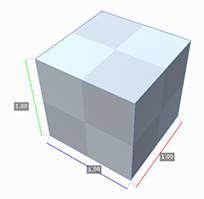
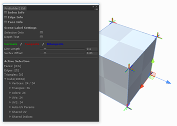

About
Provides info about the currently installed version of ProBuilder.
Documentation
Opens the latest Documentation online.
Check for Updates
Check for any available ProBuilder updates.
Dimensions Overlay
Show or hide the Dimensions Overlay, which works on all mesh objects (not just ProBuilder)

Actions
Tools > ProBuilder > Actions
Generate UV2
-
Generate UV2 - Selection: If you have toggled off the automatic generation of UV2 channels in Preferences, you can use this item to build UV2 (lightmap) channels for the current selection.
-
Generate UV2 - Scene: This generates UV2 (lightmap) channels for all ProBuilder objects in the scene. This is only useful if you have toggled off automatic UV2 generation in the Preferences panel.
Strip ProBuilder Scripts
-
Strip all ProBuilder Objects in Scene: Remove all ProBuilder scripts from all objects in this scene, leaving just the models.
-
Strip all ProBuilder Objects in Selection: Remove all ProBuilder scripts from selected objects, leaving just the model.
Repair
Tools > ProBuilder > Repair
Rebuild All ProBuilder Objects
Rebuild mesh representations from stored ProBuilder data for each object in the scene. If you have a lot of objects in a scene this can take a while.
Rebuild Shared Indices Cache
Discards all shared vertex position data and rebuilds based on proximity.
Remove Degenerate Triangles
Deletes triangles on a mesh that are either taking up no space, or are duplicates.
Upgrade Scene to Advanced
After upgrading from ProBuilder Basic to ProBuilder Advanced you will need to run this action in order to preserve the materials applied to objects. This is only necessary once per scene.
Upgrade Selection to Advanced
Same as Upgrade Scene to Advanced, except that only the current object selection is affected (as opposed to the entire scene).
Convert to Package Manager
Used when upgrading a ProBuilder 2.x project to 3.0. See Convert to Package Manager for more information.
Experimental
Tools > ProBuilder > Experimental
These are tools or functions that aren’t quite ready for public use, but are included for users to try out early, and report issues/feedback.
See Experimental Tools for more information.
Debug
Tools > ProBuilder > Debug
Displays detailed information on the currently selected mesh.

Export
Tools > ProBuilder > Export
Export Asset
Save the selection as Unity mesh .asset files.
Export OBJ
Export the selected object(s) as OBJ
Export Stl Ascii
Export the selected object(s) as STL in ASCII format
Export Stl Binary
Export the selected object(s) as STL in Binary format